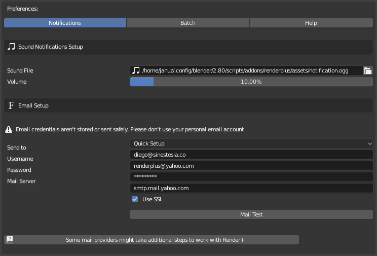
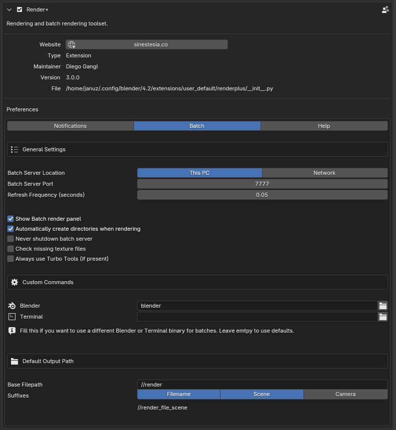
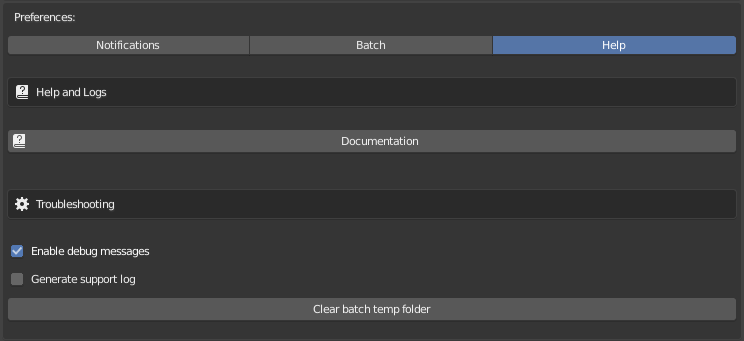

Addon Preferences¶
The addon’s preferences appear under it once you have enabled it in user preferences.
Notifications¶

Sound¶
Custom Sound: Set your own sound file to use for notifications. This file can be anything that Blender can play (WAV, MP3, OGG, AIFF). If you want to get the default sound back after you’ve changed it, right-click the
Custom Soundinput and select “Reset to Default Value”Sound Volume: Set the volume for notifications. Note that the volume is relative to the system/speakers volume.
Email¶
Before you can use email notifications you need to setup a SMTP server and an email address to send to.
SMTP stands for Simple Mail Transfer Protocol. SMTP servers are used to send and relay emails. If you have a GMail, Yahoo, or Microsoft Live email account you can use the Quick Setup button to set it up automatically. Simply add your username and password.
If your email account is provided by a different hosting company, ask your service provider for instructions on how to connect to their SMTP server. Hosting companies usually have this information in a dedicated page in their knowledge base or support sections.
I strongly recommend you don’t use your primary email account for this. Blender wasn’t built to handle sensitive data, such as your email user and password. Note that your password will be stored without encryption. There is a certain risk that this information could be stolen. Stay safe by using an email account made specifically for notifications.
Setting |
Description |
|---|---|
Send to |
Email address to send notification |
Server |
STMP server to use |
Username |
Username for SMTP server |
Password |
Password for SMTP |
Use SSL |
Enable or disable SSL for SMTP connection |
You can test the email connection by clicking the “Test Connection” button. Note that it may take a while depending on your internet connection.
Gmail¶
If you want to set up a Gmail account you will have to take an extra step to be able to use it due to Google’s security policies. You will have to do one of these two things:
Batch¶

Batch Server Location: Whether to run the batch server locally (in this PC), or look for it in a network.
Batch Server Address: Network URL for the batch server. This shouldn’t include “http://” or the port. It can be an IP or a host. For example: 192.168.10.169 Only available when the server location is set to network.
Test server connection: This button lets you test if the server is responding at the configured address and port.
Show Batch Render Panel: Toggle the batch rendering ui.
Refresh frequency: Specify how often the interface should be updated while a batch is running. The number is in seconds.
Batch Server Port: Port to use for the Batch Server.
Automatically create directories when rendering: If an output path is set to a directory that doesn’t exist, try to create it automatically.
Never shutdown batch server: Render+ shutdowns the batch server automatically after a successful batch is run. You can choose to keep the server running for other purposes by enabling this option.
Check missing texture files: Render+ can check if your renders are missing some texture files and save you from pink renders. This option will cancel a batch if one of the renderjob is missing an image.
Server stuck wait: If the server is sending the same response over and over (showing no progress) Render+ can kill the server. This setting controls how many minutes to wait before deciding to stop the server.
Always use Turbo Tools (if present): Sets the “Use Turbo Tools” checkbox on by default for all new render jobs.
Custom Commands¶
These settings allow you to choose a specific terminal and blender app to use for batch. Leave this blank to use the defaults.
Blender: Use a specific Blender executable when running batches. Note: This must be set when the server location is set to Network and must point to a valid Blender binary in the server. Otherwise the server won’t know which Blender executable to run for the batch.
Terminal: Use a specific terminal when running batches. Don’t forget to include a parameter to run a command (eg.
'xterm -e ').
Default Output Path¶
This section lets you set the default output path for new jobs. This only applies to render jobs created manually, not from Quick Batches. You can see a sample of how the path would look at the bottom.
The path can be Blender relative (starting with "//") or absolute
(from "C:\" or "/").
Setting |
Description |
|---|---|
Base Filepath |
A static filepath. This will be the same for all jobs. |
Scene |
The job’s scene’s name at the moment of creation |
Camera |
The scene’s default camera |
Help¶

Documentation: Open this documentation. Uses the local copy, so no internet connection is required.
Generate support log: When this setting is enabled Render+ will record all useful information to a log file. This information makes it faster and easier to fix bugs and solve issues. Don’t leave this option on all the time, as the log file can grow very quickly.
Support log file: Determines where the log file is saved.
If you are using Windows make sure this is set to a directory that exists and can you have permission to write, even if the support log is disabled. Otherwise you’ll get errors. It’s one of those cases where Windows likes to be “special” and it can’t be fixed easily.
Clear Batch temp folder: This button deletes all temporary files used for batch rendering. The batch server takes care of these automatically, but if you find any strange errors with batch renders or just want to clear space use this button.